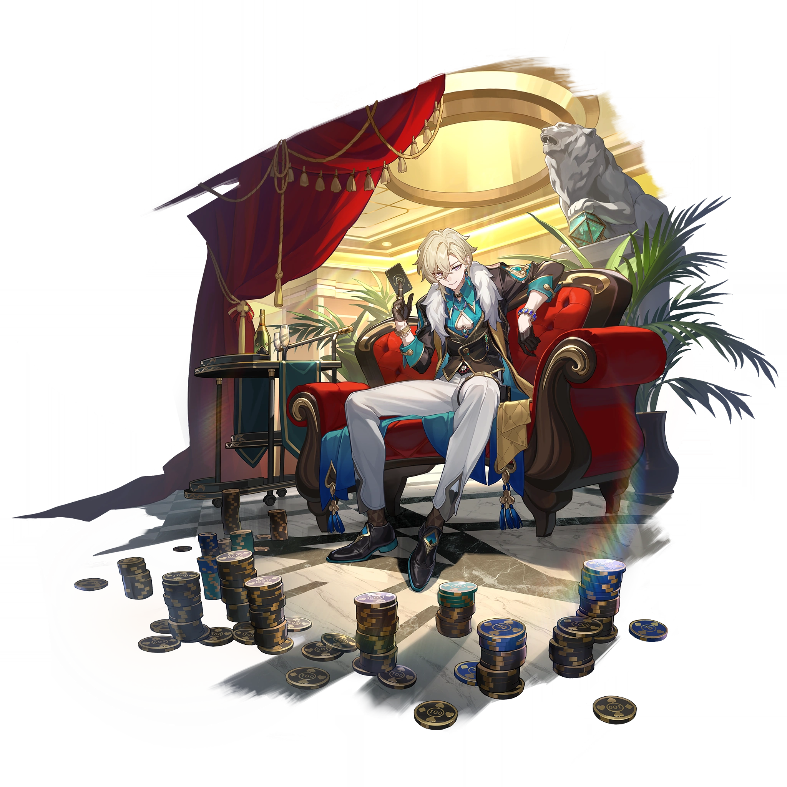
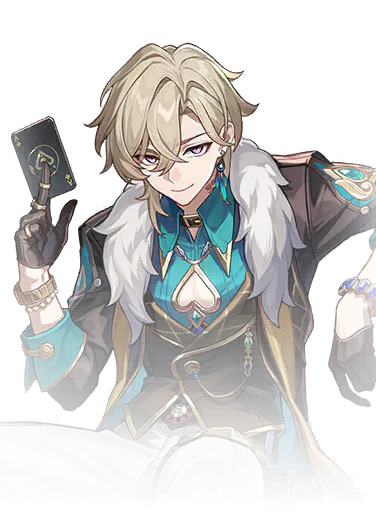

Descripcion del personaje
Un alto directivo del Departamento de Inversiones Estratégicas de la Corporación para la Paz Interastral y uno de los Diez Corazones de Piedra. Su piedra angular es la aventurina de las estratagemas.
Un amante del riesgo de carácter ostentoso. Su constante sonrisa hace que sea difícil para la gente discernir sus verdaderos sentimientos.
Ganó su posición actual apostando contra el destino mismo. Considera la vida como una inversión de alto riesgo y alto rendimiento, y siempre ha sido un experto apostador en este aspecto.
Aventurine se presenta como un personaje estratégico, que valora la suerte y el intercambio como elementos centrales de su vida y su visión del mundo, siempre calculando y buscando beneficios en cada transacción o relación
Aventurine destaca por su capacidad para tomar decisiones arriesgadas en nombre de la corporación, lo que refleja su naturaleza audaz. A lo largo de su historia en el juego, ha demostrado ser un personaje capaz de maniobrar en el complejo mundo de las transacciones interplanetarias, aplicando sus principios de comercio y cálculo en la vida diaria, así como en el campo de batalla. Él representa el enfoque empresarial implacable de la IPC, donde cada acción tiene un propósito estratégico y la ganancia siempre es el objetivo final.
Introduccion al personaje
Aventurine se presenta con una actitud despreocupada y una sonrisa constante, lo que a menudo oculta sus verdaderas intenciones. Su filosofía de vida se centra en el concepto de que "cuanto mayor sea el riesgo, mayor será la recompensa", y esto se refleja en su estilo de juego, que incluye estrategias de apoyo y protección para sus aliados. En combate, Aventurine tiene la habilidad de proporcionar escudos a sus compañeros y resistir ciertos debuffs de control de multitudes, lo que lo convierte en un valioso integrante del equipo.

Calidad del personaje

VIA del personaje
Conservación

Estadisticas del personaje
- PV: 1203
- ATQ: 446
- DEF: 655
- VEL: 106
- Provocacion: 150